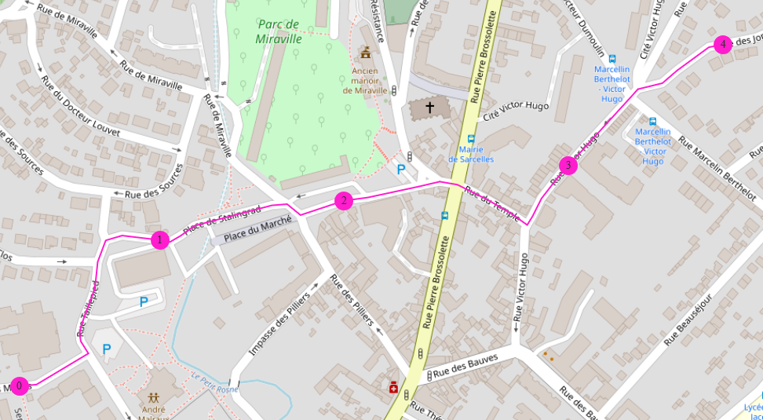

Wayfarer¶

Wayfarer is Python library for creating and analysing geospatial networks using NetworkX.
See the Online Demo to see examples of use cases for the library.
See the Wayfarer Presentation for an overview presentation.
Functionality¶
Its focus is on creating user interfaces for selecting and creating linear features such as roads and rivers in a network. Uses shortest routes to provide a user interface quickly mark up linear features.
Routing¶
Dynamic splitting - accessibility scenarios. Changes to isochrones.
Linear Referencing¶
Linear referencing is a powerful technique used in Geographic Information Systems (GIS) to locate geographic features and events along a linear feature such as a road, river or pipeline.
Easy analysis and reporting of data along linear features
Efficient data storage - no need to duplicate linear features
Why Use Wayfarer?¶
Works with any data source (any database, flat files, Python dictionaries)
Compatibility with osmnx
Access to all of the NetworkX Algorithms
Allow an easy user interface for marking up features on linear referenced features.
Comparison with Alternatives¶
pgRouting - requires users to have a good understanding of SQL, PostGIS, and network analysis concepts. This can make it difficult for beginners to get started. PgRouting is designed to work with PostgreSQL and PostGIS, so users may need to convert their data to these formats before they can use the tool. This can be time-consuming and may require additional software or expertise. More familiar with Python than Postgres and SQL
Network Analyst is an extension for ArcGIS
GraphHopper
OSRM
OSMNX is a Python library for working with OpenStreetMap data and generating street networks. It includes tools for routing and network analysis, including shortest-path algorithms and tools for calculating network measures such as centrality and betweenness. OSMnx can be used to generate routing networks for a range of use cases, including transportation planning and urban design.
Pandana is a Python library for working with large-scale spatial networks, including road networks and public transit networks. It includes tools for network analysis and routing, as well as tools for generating spatial aggregates and conducting spatial queries. Pandana is designed to be fast and memory-efficient, making it well-suited for large-scale routing applications
PyRoutelib is a Python library for network routing that is built on top of NetworkX. It includes a range of routing algorithms, including Dijkstra’s algorithm and A* search, as well as tools for working with routing profiles and generating directions. PyRoutelib is designed to be easy to use and can be integrated into other Python projects.
Demo Applications¶
The demo applications use a Python back-end with wayfarer, and a JavaScript front-end build on OpenLayers. The front-end code is stored in a separate repository at https://github.com/compassinformatics/wayfarer-demo/
To setup the code below you can run the following commands in a PowerShell terminal and using Windows. Alternatively you can use the Dockerfile.
# create a virtual environment and activate it
virtualenv C:\VirtualEnvs\wayfarer
C:\VirtualEnvs\wayfarer\Scripts\activate.ps1
# check-out the latest version of the wayfarer project which include
# the demo Python services and data
git clone https://github.com/compassinformatics/wayfarer
# install wayfarer and its requirements to a virtual environment
cd C:\Temp\wayfarer
pip install wayfarer
pip install -r requirements.demo.txt
# copy the data to the demo folder
Copy-Item -Path demo -Destination C:\VirtualEnvs\wayfarer -Recurse
Copy-Item -Path data -Destination C:\VirtualEnvs\wayfarer -Recurse
# run the demo services as a Python web service
cd C:\VirtualEnvs\wayfarer\demo
uvicorn main:app --workers 4 --port 8001
# should now be available at http://localhost:8001